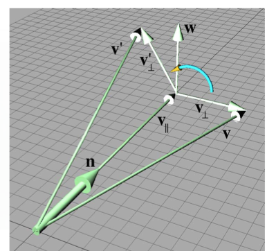

Matrix Linear Transformations
Rotation about an arbitrary axis
Recall: Not translating, so axis must go through the origin
Unit vector $n$ will be the axis.
We want a matrix that rotates about $n$ by $\theta = R(n, \theta)$.
$vR(n, \theta) = v^\prime$
To simplify, we'll solve the problem in the plane perpendicular to $n$.
Split $v$ into $v_\perp + v_\Vert$
$v_\Vert$ is parallel to $n$, so it won't be affected by the rotation.
So we know $v^\prime = v_\perp + v^\prime_\Vert$

$v_\Vert$ is the portion of $v$ that is parallel to $n$.
$v_\Vert$ is the value of $v$ that is projected onto $n = (v \cdot n)n$
$v_\perp$ is the portion of $v$ that is perpendicular to $n$.
$v_\perp = v - v_\Vert$, which is the result of projecting $v$ onto plane perpendicular to $n$.
$w$ is a vector perpendicular to both $v_\perp$ and $v_\Vert$, with same
length as $v_\perp$
$w$ is the result of rotating $v_\perp$ about $n$ by $90^{\circ}$
$w = n \times v_\perp$
$v^\prime_\perp = cos\theta v_\perp + sin\theta w$
Substituting for $v_\perp$ and $w$:
$v_\Vert = (v \cdot n)n$
$v_\perp = v - v_\Vert$
$ = v - (v \cdot n)n$
Substituting for $v_\perp$ and $w$:
$w = n \times v_\perp$
$= n \times (v - v_\Vert)$
$= n \times v - n \times v_\Vert$
$= n \times v - 0$
$= n \times v$
Substituting for $v_\perp$ and $w$:
$v^\prime_\perp = cos\theta v_\perp + sin\theta w$
$= cos\theta(v - (v \cdot n) n) + sin\theta (n \times v)$
Substituting for $v_\prime$:
$v^\prime = v^\prime_\perp + v_\Vert$
$= cos\theta(v - (v \cdot n) n) + sin\theta (n \times v) + (v \cdot n)n$
With $v^\prime$ in terms of $v, n,$ and $0$ we can compute the basis vectors.
$p = \left[ \begin{smallmatrix} 1 && 0 && 0 \end{smallmatrix} \right]$
$
p^\prime = cos\theta(p - (p \cdot n) n) + sin\theta (n \times p) + (p \cdot n)n
$
(Using column vectors for formatting)
$p^\prime
= cos\theta(\left[ \begin{smallmatrix} 1 \\ 0 \\ 0 \end{smallmatrix} \right]
- (\left[ \begin{smallmatrix} 1 \\ 0 \\ 0 \end{smallmatrix} \right]
\cdot \left[ \begin{smallmatrix} n_x \\ n_y \\ n_z \end{smallmatrix} \right])
\left[ \begin{smallmatrix} n_x \\ n_y \\ n_z \end{smallmatrix} \right]
)
+ sin\theta (
\left[ \begin{smallmatrix} n_x \\ n_y \\ n_z \end{smallmatrix} \right]
\times \left[ \begin{smallmatrix} 1 \\ 0 \\ 0 \end{smallmatrix} \right])
+ (\left[ \begin{smallmatrix} 1 \\ 0 \\ 0 \end{smallmatrix} \right]
\cdot
\left[ \begin{smallmatrix} n_x \\ n_y \\ n_z \end{smallmatrix} \right])
\left[ \begin{smallmatrix} n_x \\ n_y \\ n_z \end{smallmatrix} \right]$
$p^\prime
= cos\theta(
\left[ \begin{smallmatrix} 1 \\ 0 \\ 0 \end{smallmatrix} \right]
- n_x
\cdot \left[ \begin{smallmatrix} n_x \\ n_y \\ n_z \end{smallmatrix} \right]
)
+ sin\theta
\left[ \begin{smallmatrix} 0 \\ n_z \\ -n_y \end{smallmatrix} \right]
+
n_x
\left[ \begin{smallmatrix} n_x \\ n_y \\ n_z \end{smallmatrix} \right]
$
$p^\prime
= cos\theta
\left[ \begin{smallmatrix} 1 - n_x^2 \\ -n_xn_y \\ -n_xn_z \end{smallmatrix} \right]
+ sin\theta
\left[ \begin{smallmatrix} 0 \\ n_z \\ -n_y \end{smallmatrix} \right]
+
\left[ \begin{smallmatrix} n_x^2 \\ n_xn_y \\ n_xn_z \end{smallmatrix} \right]
$
$p^\prime
=
\left[ \begin{smallmatrix} cos\theta - n_x^2cos\theta \\ -n_xn_ycos\theta \\ -n_xn_zcos\theta \end{smallmatrix} \right]
+
\left[ \begin{smallmatrix} 0 \\ n_zsin\theta \\ -n_ysin\theta \end{smallmatrix} \right]
+
\left[ \begin{smallmatrix} n_x^2 \\ n_xn_y \\ n_xn_z \end{smallmatrix} \right]
$
$p^\prime
=
\left[ \begin{smallmatrix}
cos\theta - cos\theta n_x^2 + n_x^2
\\ -n_xn_ycos\theta + n_zsin\theta + n_xn_y
\\ -n_xn_zcos\theta - n_ysin\theta + n_xn_z
\end{smallmatrix} \right]
$
$p^\prime
=
\left[ \begin{smallmatrix}
n_x^2(1-cos\theta)+ cos\theta
\\
n_xn_y(1-cos\theta)+ n_zsin\theta
\\
n_xn_z(1-cos\theta)- n_ysin\theta
\end{smallmatrix} \right]
$
$q = \left[ \begin{smallmatrix} 0 && 1 && 0 \end{smallmatrix} \right] $
$q^\prime
=
\left[ \begin{smallmatrix}
n_xn_y(1-cos\theta) - n_z sin\theta
\\
n_y^2(1-cos\theta) + cos\theta
\\
n_yn_z(1-cos\theta) + n_x sin\theta
\end{smallmatrix} \right]
$
$r = \left[ \begin{smallmatrix} 0 && 0 && 1 \end{smallmatrix} \right] $
$r^\prime
=
\left[ \begin{smallmatrix}
n_xn_z(1-cos\theta)+ n_y sin\theta
\\
n_yn_z(1-cos\theta)- n_x sin\theta
\\
n_z^2(1-cos\theta) + cos\theta
\end{smallmatrix} \right]
$
$
R(n,\theta) = \left[ \begin{smallmatrix} p^\prime \\ q^\prime \\ r^\prime \end{smallmatrix} \right]
$
$=
\left[ \begin{smallmatrix}
n_x^2(1-cos\theta)+ cos\theta
&& n_xn_y(1-cos\theta)+ n_zsin\theta
&& n_xn_z(1-cos\theta)- n_ysin\theta
\\
n_xn_y(1-cos\theta) - n_z sin\theta
&& n_y^2(1-cos\theta) + cos\theta
&& n_yn_z(1-cos\theta) + n_x sin\theta
\\
n_xn_z(1-cos\theta)+ n_y sin\theta
&& n_yn_z(1-cos\theta)- n_x sin\theta
&& n_z^2(1-cos\theta) + cos\theta
\end{smallmatrix} \right]
$